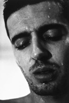

Projects
Exhibitions
Publications
Biography
Contact
Links
� 2005-2008
Website by D. Maisel
|
 View photographs 
In this series, I photographed men seemingly caught at the moment of orgasm. I intended to show men in ecstasy... something rarely seen in newspapers, advertisements, or even pornography. In 1996, Stop Over Press published Head Shots, a selection of portraits from the series. It includes an introduction by John Miller, short stories by Lynne Tillman and Gary Indiana. In summer 1996, the Guggenheim Museum Magazine included some of these photos with excerpts from the book. International magazines like Colors, ETC, Shift, Dutch, and Etiqueta Negra have published these photos as well. The Swedish Federation for Gay and Lesbian Rights used them in their 2002 safe sex campaign - stressing that caution need not preclude pleasure. |